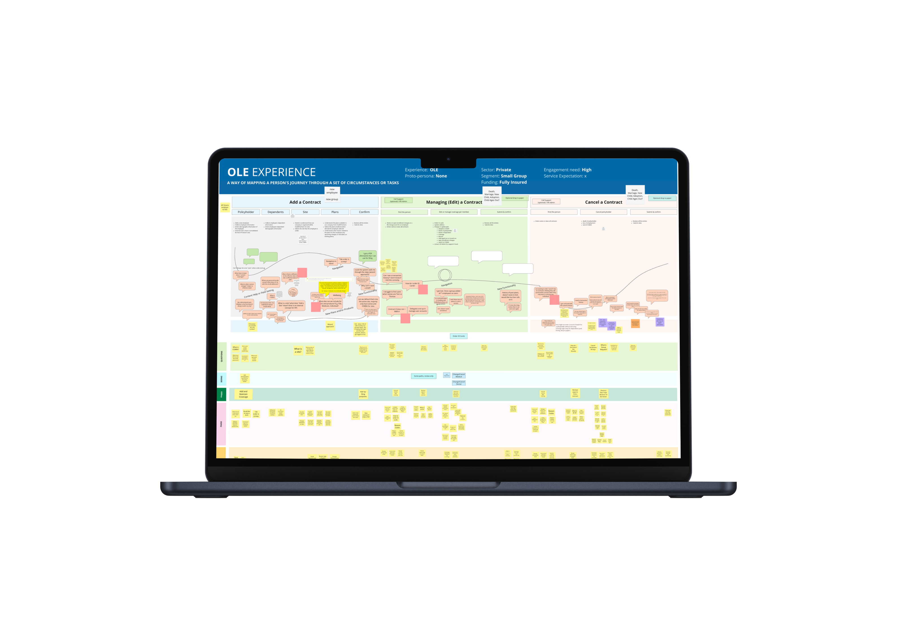
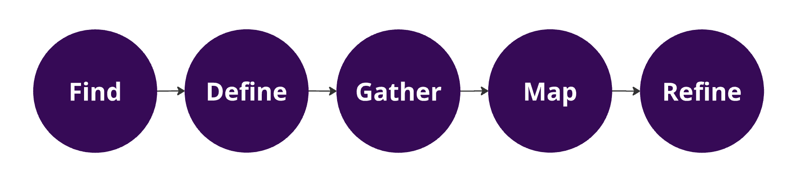
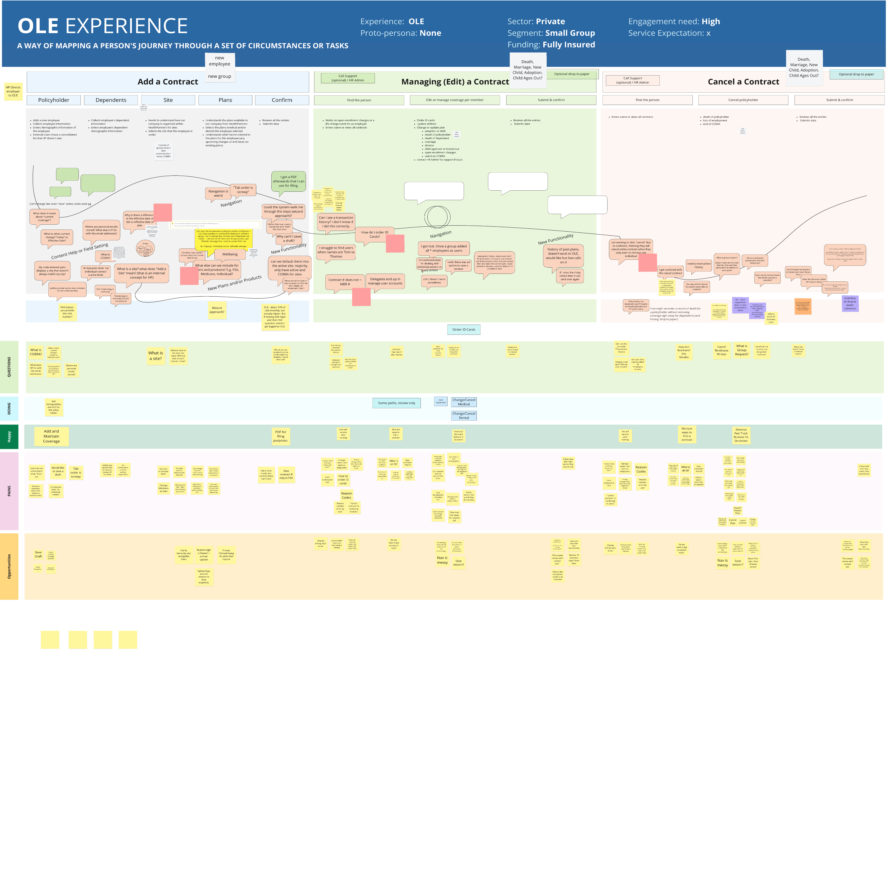
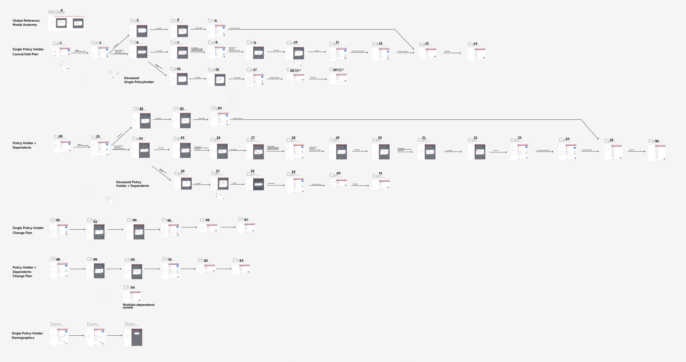
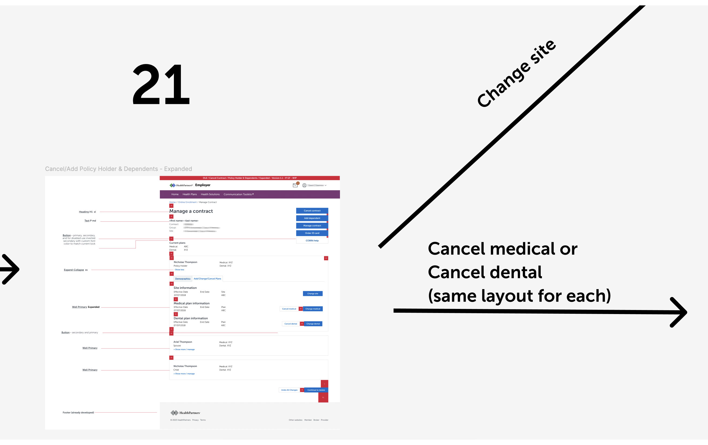

Online Enrollment (OLE) is HealthPartners' proprietary system that grants employers, who are providing their employees health insurance through Health Partners, the ability to add, edit and cancel individual or group coverage. Since OLE's design has not been updated since 2010, they decided it was time to update the UI. We sought to improve the user flows in order to meet current needs.
Over the years, HealthPartners experienced a massive influx of larger employer groups with significantly more employees. In spite of this increase, there is a noticeable decrease in yearly contract renewals. We have received feedback from users informing us that they are having a hard time using OLE effectively. My goal is to map out the complete end-to-end service process and identify user pain points. Once this is complete the existing OLE flows will be improved and the interface can be updated to the current design system.

In following the steps I share above I created a service blue print for the online enrollment system. I successfully identified several pain points. With these pain points in mind I adjusted the designs to improve user flows. In the creation of this blueprint, I conducted several collaborative workshops, which was a two month endeavor. While leading these workshops, I included internal stakeholders, software developer teams and other designers. Within these sessions I established Customer Actions, Front Stage Actions and Backstage actions to form a holistic view of the online enrollment experience. Additionally, I interviewed an employer that had an active contract with Health Partners.

The online enrollment system was simplified into six separate flows. A total of fifty-seven screens were updated to the current pattern library and my findings influenced user interface enhancements.

On this screen below, I configured "demographics" and "add/change/cancel plan" as two separate tabs that users can easily flip through. Now, a prospective user can see the employee's medical plan, dental plan and family members in the demographics tab. Employees and their family can be edited on this screen through a series of modals that give the ability to make changes.

With health insurance continuing to change at a fast pace, there will be an urgent need for user flows to evolve alongside this complexity. I found that death and retirement scenarios are currently non-existent user flows, which employers have indicated a need for. Thus, additional design work must be implemented. I communicated this need to stakeholders and designers on my team in order to encourage them to conduct additional user interviews with employers to identify unique needs. Stakeholders will monitor analytics and I will gather data to continue prospective design updates.